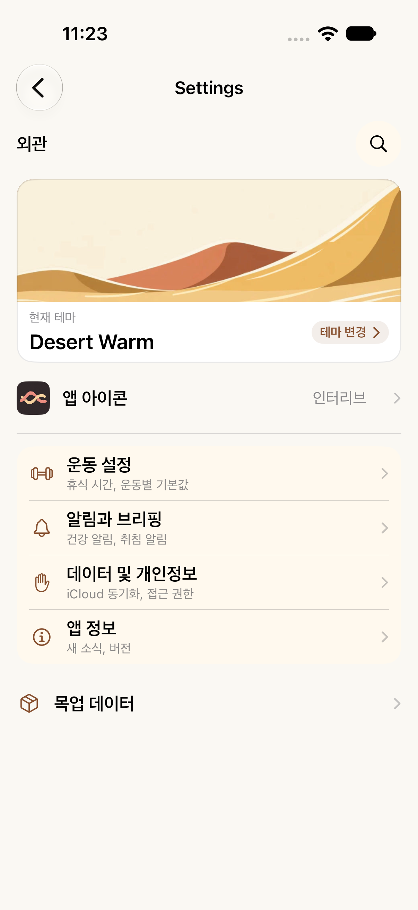
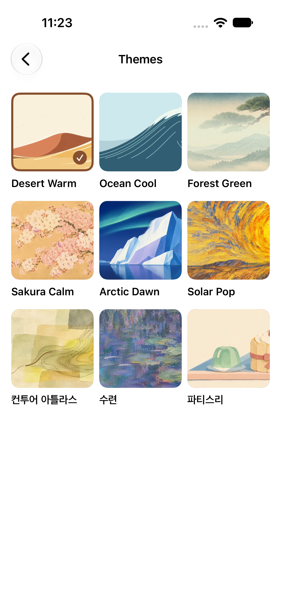
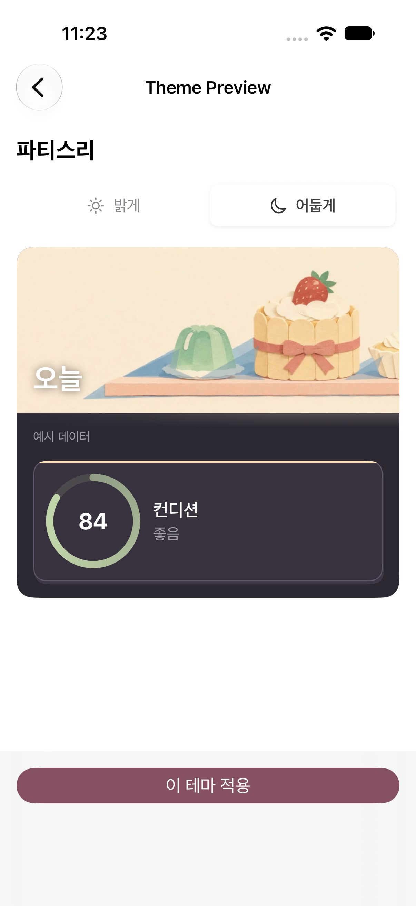
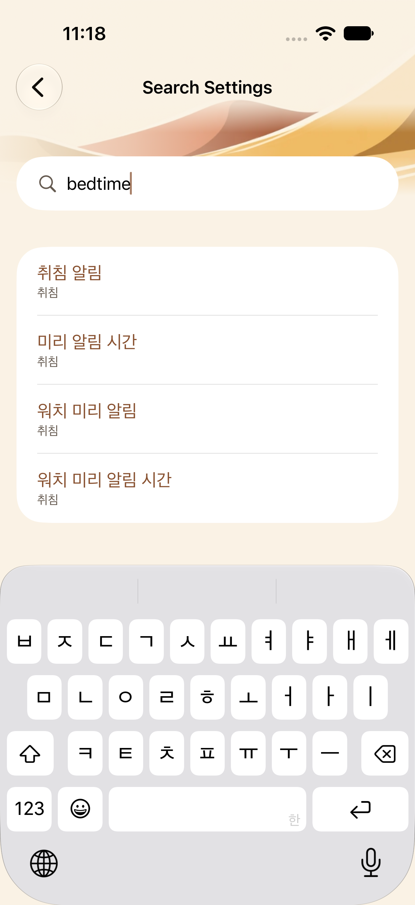
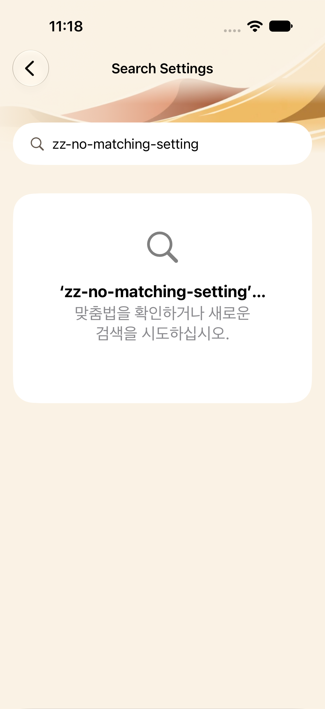
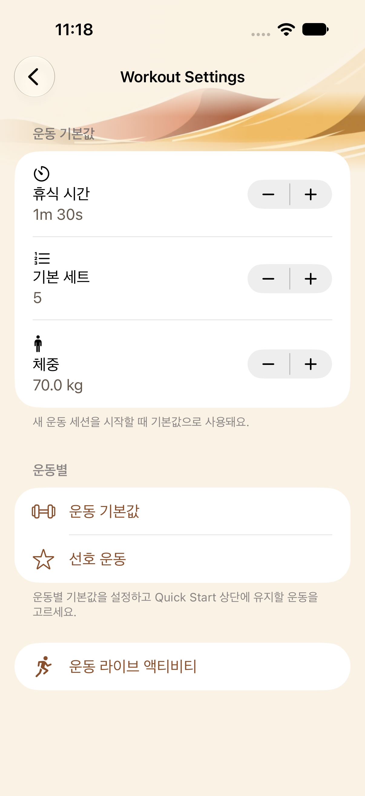

S01 설정 허브 · 실제 화면
원본 XCTest named attachments만 표시합니다. Canonical S01은 설정 화면입니다.
기기 상태
- iPhone · UDID 58DF10CE-D19E-4D27-97F9-8BC17968B2A8 · revision f779a59e9
- iPad: 캡처 대기
- Duo · 외부 화면: 캡처 대기
- Duo · 내부 화면: 캡처 대기
iPhone
S01 포함 설정 보드 · 캡처 근거 JSON
 ko-privacy-detail · 1206×2622 px · f779a59e9
ko-privacy-detail · 1206×2622 px · f779a59e9
ko-settings-home · 1206×2622 px · f779a59e9
ko-theme-gallery · 1206×2622 px · f779a59e9
ko-theme-preview-dark · 1206×2622 px · f779a59e9 ko-theme-preview-light · 1206×2622 px · f779a59e9ko-workout-detail · 1206×2622 px · f779a59e9
ko-theme-preview-light · 1206×2622 px · f779a59e9ko-workout-detail · 1206×2622 px · f779a59e9 settings-bedtime-detail · 1206×2622 px · 95dac630f
settings-bedtime-detail · 1206×2622 px · 95dac630f settings-privacy · 1206×2622 px · 95dac630f
settings-privacy · 1206×2622 px · 95dac630f
settings-search-bedtime · 1206×2622 px · 95dac630f
settings-search-empty · 1206×2622 px · 95dac630f
settings-workout · 1206×2622 px · 95dac630fUDID: 58DF10CE-D19E-4D27-97F9-8BC17968B2A8 · source f779a59e9